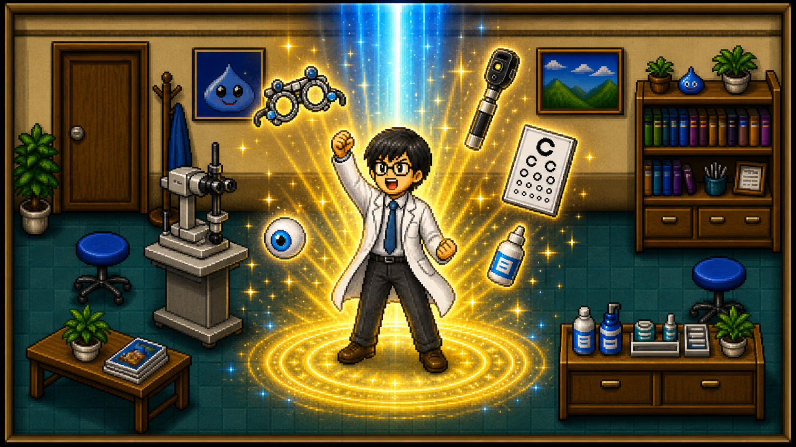

CLICK TO START ADVENTURE
Confidence
50
EXP
0
LV
1
Loading...
System
▼
🎒 Inventory:
GAME OVER
The patient has lost all trust in your clinical ability.
🔄 Retake License Exam

Clinical Assessment Complete!
🎉 Play Again
© 2026 Kuan-Wei Lee